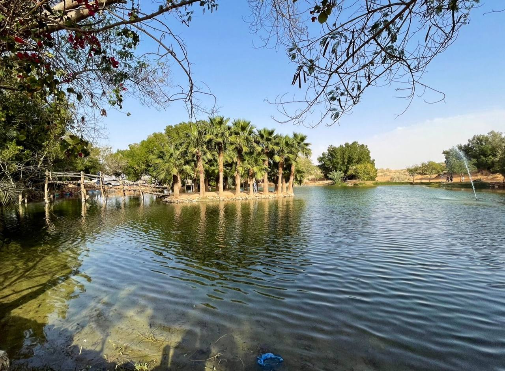
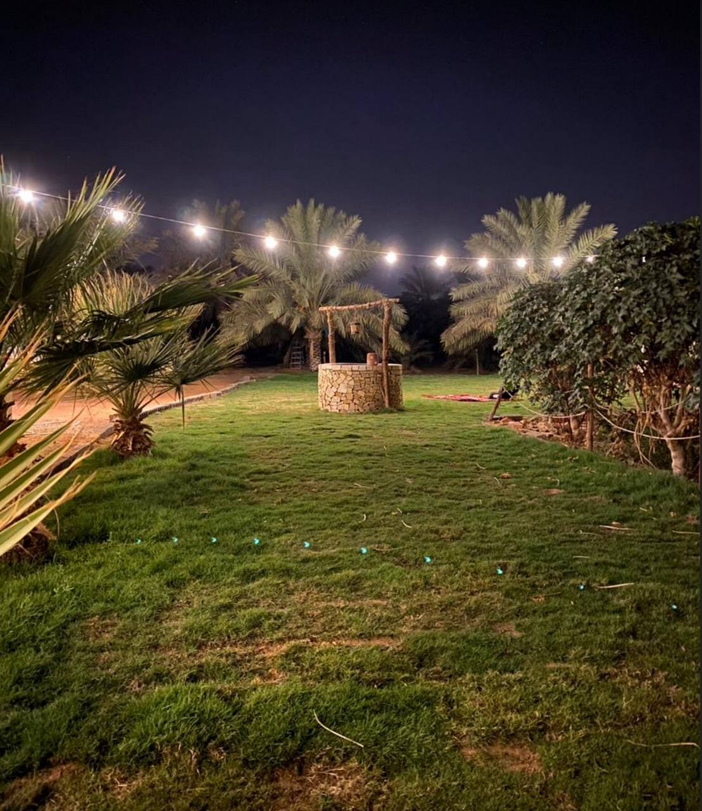

مسجد قديم بمحافظة البدائع ويتميز المسجد بطرازه
المعماري الشهير والتي عادة يتبعه استادية الطين في
نجد قبل نحو 100 عام

مزرعة الحبردي
التصنيف : مزرعة
من أفضل مزارع البدائع وأجملها تحتوي على بحيرة
جميلة وتناسب العائلات ينصح بها لقضاء وقت ممتع

مزرعة البير
التصنيف : مزرعة تراثية
تتميز مزرعة البير بوجود جلسات خارجية وداخلية ومكان
لألعاب الأطفال ليتناسب المكان مع جميع الفئات وايضا
تحتوي على نخيل وأشجار ومسطحات خضراء واسعة
مزرعة السليمانية
التصنيف : مزرعة تراثية
من أكبر مزارع البدائع وأجملها فهي تحتوي على مجالس
شعبية وجلسات خارجية وايضا تحتوي على مسبح والعاب
للأطفال اجعلها من مخططاتك عند القدوم للبدائع
مزرعة ابراهيم صالح الحبيب
التصنيف : مزرعة
مزرعة مناسبة لأحتفالاتكم ومناسباتكم لما تحتويه من مبنى
متكامل يحتوي على قاعة كبيرة وجلسات داخلية وايضا
حديقة جميلة في الخارج تحتوي على النخيل والشجيرات